RSVP for Memorial Service
We will meet at Clackamette Park in Oregon City on September 21 for a short memorial service and celebration to honor Don Miller.
The memorial will take place at 11 AM, near General Shelter B, and be followed by lunch at the Rivershore Bar & Grill.
We will gather for an informal dinner, on his birthday, Friday, September 20th at 6PM at La Fiesta Kitchen
Please RSVP here
Guestbook and Photos
Share a memory of Don or some kind words for the family in the Guestbook. We will collect and share them on this website. Thank you.
Share photos of Don here (requires Google account).
Obituary
DONALD A. MILLER, beloved husband, father, grandfather, great grandfather, friend, and retired Boeing engineer died in Milwaukie, Oregon on August 3, 2024. He was 91.
Don was born on September 20, 1932 in Park Place, Oregon City to Reva Smith in a small house affectionately referred to as “the chicken house.” Don was raised by his grandmother Effie Smith and had a rural boyhood with uncles Delbert and Elbert and a colorful cast of uncles, aunts, and cousins. He often told of sleeping on a porch, selling fireworks with cousin Donna Jean, and watching his uncles lift up calves to determine if they were ready for the butcher. Initially given the last name Nutt after his absent father, his name was legally changed to Miller (from stepfather William Miller) as a teenager. However, he used the name Don Smith until he went to the army and wanted to cash checks written in his legal name of Miller.
Don attended Oregon City High School and pursued his college degree before being drafted into the army during the end of the Korean War. He spent two years in Germany as a clerk and occasional chauffeur to the upper ranks. He returned home, finished his degree in engineering at Lewis & Clark and the University of Oregon. He spoke of his early adulthood with happy nostalgia– he hitchhiked to Las Vegas to play craps in an effort to “get the hell out of Oregon City,” spent a summer laying the wooden floor of a school with stepfather Bill Miller, and was fired from a bakery for burning several trays of Christmas cookies. The bakers referred him to a job at Safeway which he worked for 13 years and helped him pay for college. Effie’s diary reveals her happiness whenever Donnie came around and it’s clear he was regarded as the “favorite.”
In 1955, Don married Margaret Remily and in 1956, Carolyn, the first of 6 daughters, was born. Carolyn was followed shortly thereafter by Julie, Theresa, Susie, Jackie and Nancy. In 1958 he took a job at Boeing and moved to Seattle. After a divorce in 1967, he moved the family to Houston, TX to work on the Apollo program. There he met his beloved Terrill Ann Grunski of New Orleans, LA. The two were married in Dickinson, Texas on the 4th of July, 1968.
After a year in Texas, the family of eight and one cocker spaniel named Ready made the cross-country trip to San Bernardino, CA for Don to work at TRW. These were exciting, eventful, and busy years living in the San Bernardino mountains in the village of Crestline. The family added two more dogs– Penny, a dalmatian mix, and Kippy, a poodle mix. After four years in the mountains, Don was offered a job at Boeing and the family moved to Issaquah, WA.
Don loved to run and completed several marathons. He encouraged his daughters to run, too, and was featured alongside five of them in the newspaper for completing the Sound to Narrows race together.
In 1986, Don and Terrill decided to buy and move into a 48 foot long sailboat called Garden Party where they lived for 10 years on Lake Washington with grandson Christopher Maes. Mishaps and mischief happened on board–a grandson's broken arm thanks to Don's poor supervision, and a trip from Seattle to Portland requiring help from the coast guards.
Don retired in 1995 and moved back to Oregon City where he would spend the rest of his days. He spent his time well in the company of family and a poorly behaved Bouvier De Flanders named Pierre. He worked on the house and yard, wrote his memoirs, obsessively tracked the Boeing stock price, woodworked, took trips to the coast, enjoyed relaxing mornings at Starbucks with Terrill, and often spoke with friends and family.
Don was also close with his in-laws---Larry and Carole Larmeu and their five children—Chuck, Mike, Milton, Mark, and Julie. Don teased Mike about covering his steak in ketchup and impressed Julie by winning a game of pool at Hoagie’s bar.
A man with many strengths— he was warm, friendly, inquisitive, open, and laughed often. He loved math, particularly geometry and probability, and would do the problem of the week well into his 80s. He believed in education and encouraged his children and grandchildren to pursue degrees. He was also stubborn, occasionally unreasonable, and refused the advice of professionals, especially doctors whom he hated to visit. He was curious and proud of his loved ones, asking many questions about how they were faring and what they were up to. He told wonderful stories of his early life in Oregon City, his career at Boeing, and the details of his family’s pioneer history. He loved his wife dearly and the family he leaves behind will remember his call of “Terrill Ann!” long after his passing.
Don leaves behind his wife Terrill Ann Miller, daughters Carolyn Miller, Julie Miller, Theresa Miller, Susie Jones, Jackie Provance, and Nancy Swenson, grandchildren Michael and Carrie, Christopher and Ashley, Kyle, Julie and Emily, Chase and Heidi, and great grandchildren Stetson, Daniel, Ryle, Hunter, Elle, Aella, Julian, Winona, Fawn, Loah, and Stella who brought him delight in the years before his passing.
Interview on Early Life
The following video, filmed in April of 2018, is an interview with Don and covers his early life.
Interview with Donald and Terrill
The following video, filmed in June of 2018, is an interview with Don and his wife Terrill. It covers how they met and the early years of their marriage and how they decided to by and live aboard a sailboat.
Written Memoir
Don wrote a memoir with many of his favorite stories. The unedited version is avaliable in PDF format here.
Photos
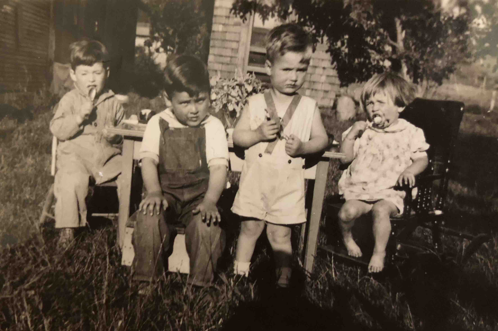 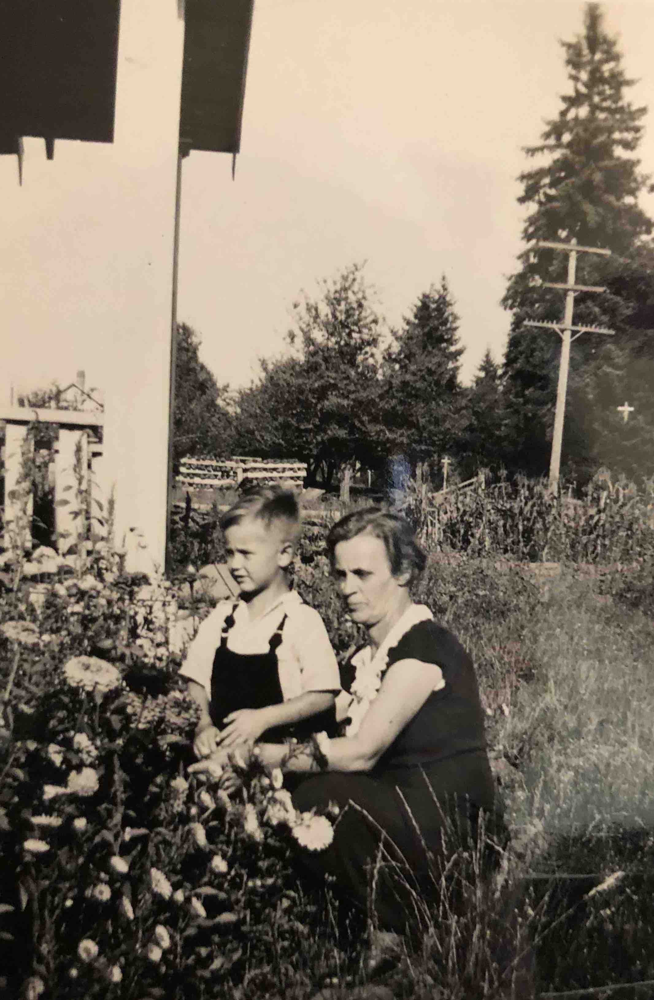 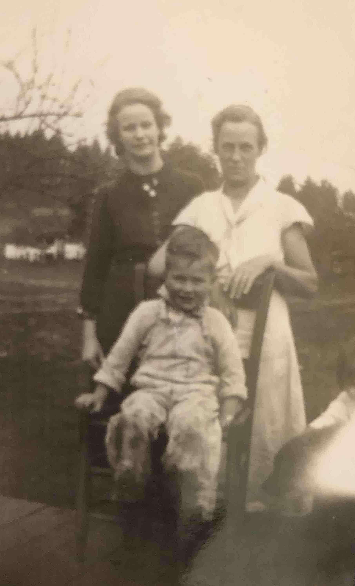 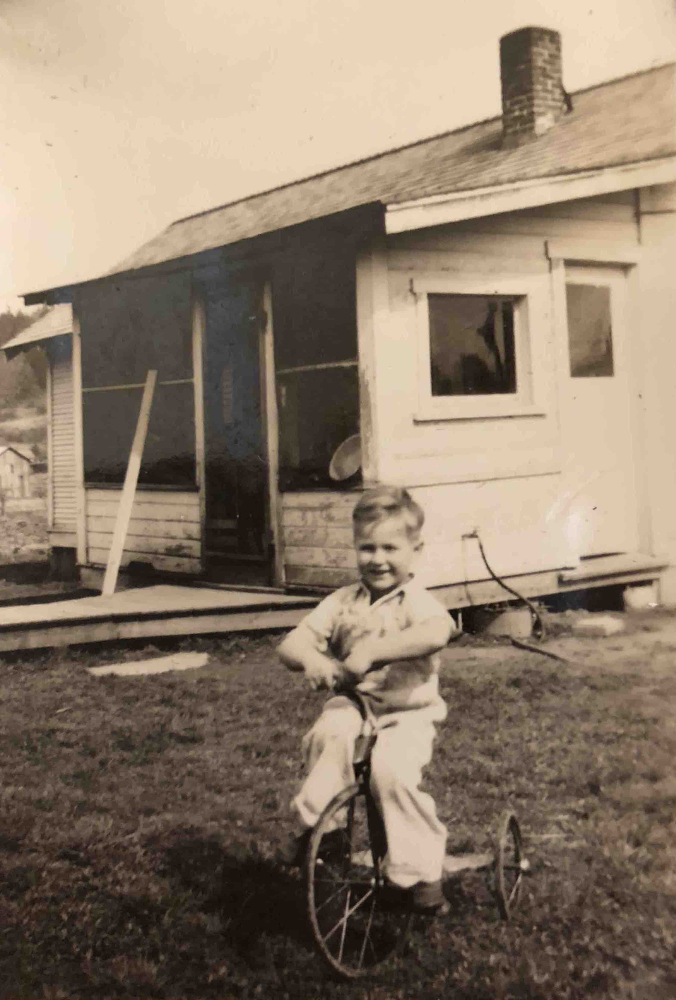 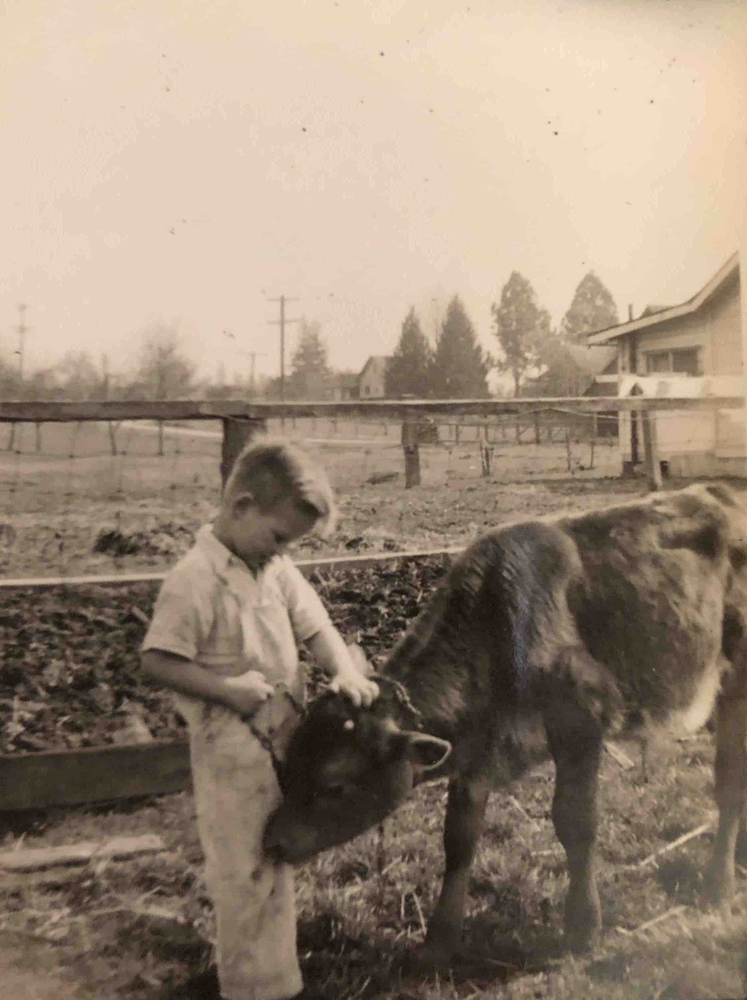 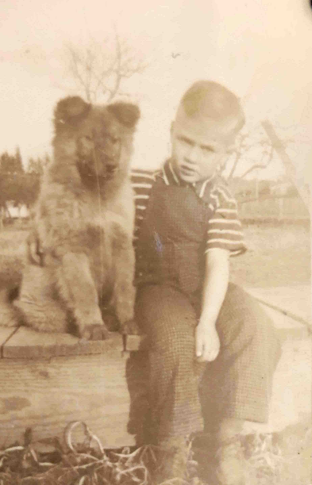 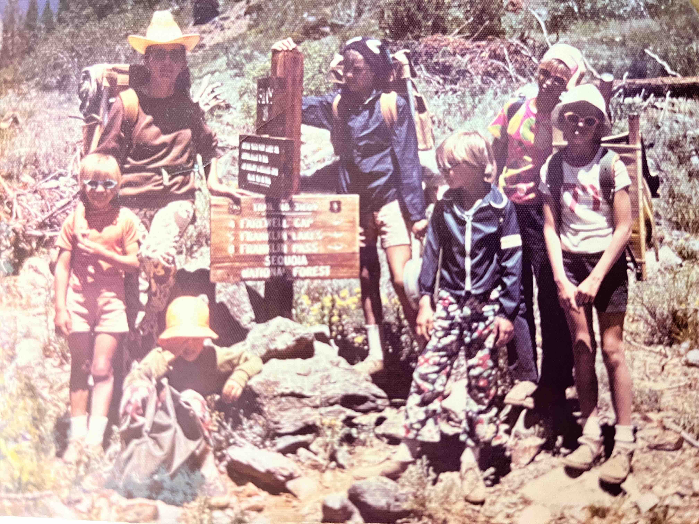
 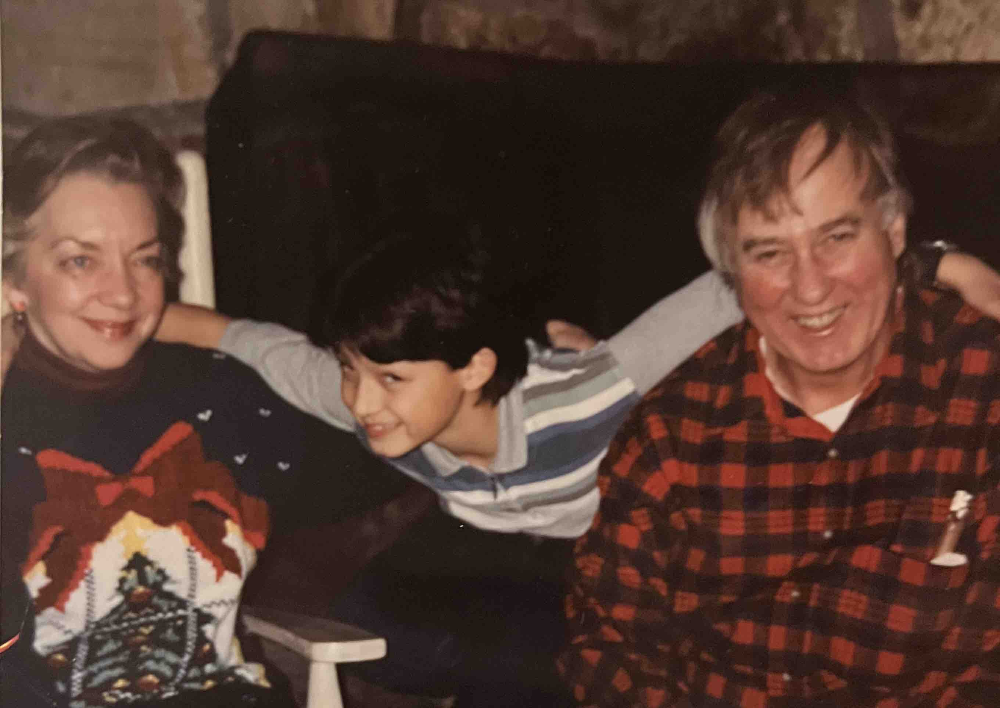
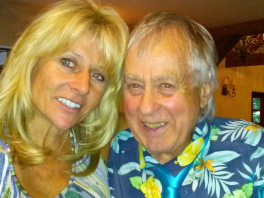
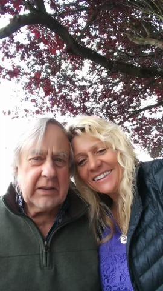
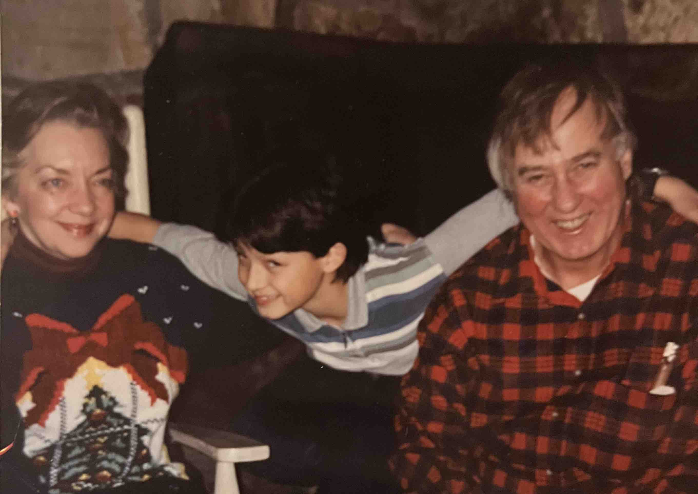
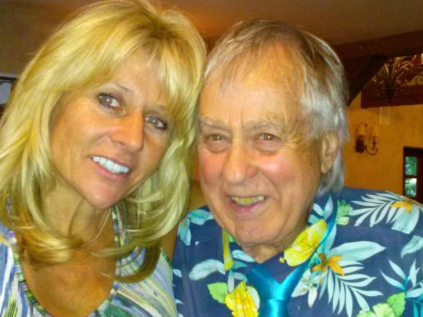
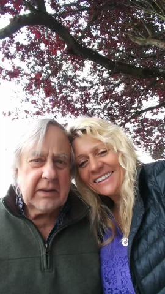